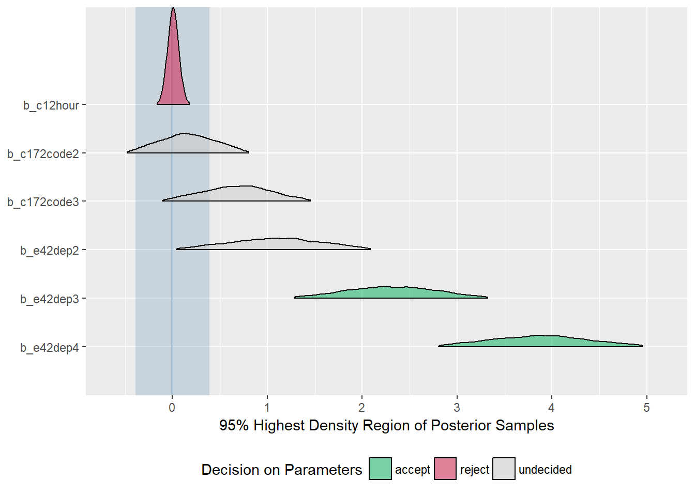

vignettes/bayesian-statistics.Rmd
bayesian-statistics.RmdThis vignettes demontrates those functions of the sjstats-package that deal especially with Bayesian models. sjstats provides following functions:
Befor we start, we fit some models, including a mediation-object from the mediation-package, which we use for comparison with brms. The functions work with brmsfit, stanreg and stanfit-objects.
library(sjstats)
library(sjmisc)
library(mediation)
library(brms)
# load sample data
data(jobs)
data(efc)
efc <- to_factor(efc, e42dep, c172code, c161sex, e15relat)
zinb <- read.csv("http://stats.idre.ucla.edu/stat/data/fish.csv")
# linear models, for mediation analysis
b1 <- lm(job_seek ~ treat + econ_hard + sex + age, data = jobs)
b2 <- lm(depress2 ~ treat + job_seek + econ_hard + sex + age, data = jobs)
# mediation analysis, for comparison with brms
m1 <- mediate(b1, b2, sims = 1000, treat = "treat", mediator = "job_seek")
# fit Bayesian models
f1 <- bf(job_seek ~ treat + econ_hard + sex + age)
f2 <- bf(depress2 ~ treat + job_seek + econ_hard + sex + age)
m2 <- brm(f1 + f2 + set_rescor(FALSE), data = jobs, cores = 4)
m3 <- brm(
bf(count ~ child + camper + (1 | persons),
zi ~ child + camper + (1 | persons)),
data = zinb,
family = zero_inflated_poisson(),
cores = 4
)
m4 <- brm(
mpg ~ wt + hp + (1 | cyl) + (1 + wt | gear),
data = mtcars,
cores = 4
)
m5 <- brm(
neg_c_7 ~ e42dep + c12hour + c172code + (1 | e15relat),
data = efc,
cores = 4
)hdi() computes the highest density interval for posterior samples. Unlike equal-tailed intervals that exclude 2.5% from each tail of the distribution, the HDI is not equal-tailed and therefor always includes the mode(s) of posterior distributions.
By default, hdi() prints the 90% intervals, however, the prob-argument can be used to calculate different or even multiple intervals.
hdi(m2)
#>
#> # Highest Density Interval
#>
#> HDI(90%)
#> b_jobseek_Intercept [ 3.45 3.87]
#> b_depress2_Intercept [ 1.95 2.44]
#> b_jobseek_treat [-0.02 0.15]
#> b_jobseek_econ_hard [ 0.01 0.09]
#> b_jobseek_sex [-0.09 0.07]
#> b_jobseek_age [ 0.00 0.01]
#> b_depress2_treat [-0.11 0.03]
#> b_depress2_job_seek [-0.29 -0.19]
#> b_depress2_econ_hard [ 0.12 0.18]
#> b_depress2_sex [ 0.04 0.18]
#> b_depress2_age [-0.00 0.00]
#> sigma_jobseek [ 0.70 0.75]
#> sigma_depress2 [ 0.59 0.64]
hdi(m2, prob = c(.5, .89))
#>
#> # Highest Density Interval
#>
#> HDI(50%) HDI(89%)
#> b_jobseek_Intercept [ 3.60 3.78] [ 3.47 3.88]
#> b_depress2_Intercept [ 2.10 2.30] [ 1.96 2.43]
#> b_jobseek_treat [ 0.03 0.10] [-0.02 0.15]
#> b_jobseek_econ_hard [ 0.03 0.07] [ 0.01 0.09]
#> b_jobseek_sex [-0.05 0.02] [-0.09 0.07]
#> b_jobseek_age [ 0.00 0.01] [ 0.00 0.01]
#> b_depress2_treat [-0.06 -0.01] [-0.10 0.03]
#> b_depress2_job_seek [-0.26 -0.22] [-0.29 -0.19]
#> b_depress2_econ_hard [ 0.14 0.16] [ 0.12 0.18]
#> b_depress2_sex [ 0.08 0.14] [ 0.04 0.18]
#> b_depress2_age [-0.00 0.00] [-0.00 0.00]
#> sigma_jobseek [ 0.71 0.74] [ 0.70 0.75]
#> sigma_depress2 [ 0.61 0.62] [ 0.59 0.64]For multilevel models, the type-argument defines whether the HDI of fixed, random or all effects are shown.
hdi(m5, type = "random")
#>
#> # Highest Density Interval
#>
#> HDI(90%)
#> r_e15relat.1.Intercept. [-0.15 1.30]
#> r_e15relat.2.Intercept. [-0.15 1.02]
#> r_e15relat.3.Intercept. [-0.91 0.70]
#> r_e15relat.4.Intercept. [-0.61 0.75]
#> r_e15relat.5.Intercept. [-0.89 0.77]
#> r_e15relat.6.Intercept. [-1.66 0.23]
#> r_e15relat.7.Intercept. [-1.22 0.86]
#> r_e15relat.8.Intercept. [-0.89 0.43]The computation for the HDI is based on the code from Kruschke 2015, pp. 727f. For default sampling in Stan (4000 samples), the 90% intervals for HDI are more stable than, for instance, 95% intervals. An effective sample size of at least 10.000 is recommended if 95% intervals should be computed (see Kruschke 2015, p. 183ff).
Unlike a frequentist approach, Bayesian inference is not based on stastical significance, where effects need to be different from “zero”. Rather, the magnitude of a model’s parameter value and its uncertainty should not be ignored, and hence, an effect is not present when it simply differs from zero, but if it’s outside a specific range that can be considered as “practically no effect”. This range is called the region of practical equivalence (ROPE).
rope() requires the rope-argument, which defined this region, and then gives a summary about the parameters and their proportion that lies inside and outside this ROPE.
rope(m5, rope = c(-1, 1))
#>
#> # Proportions of samples inside and outside the ROPE
#>
#> inside outside
#> b_Intercept 0.0% 100.0%
#> b_e42dep2 42.9% 57.1%
#> b_e42dep3 0.5% 99.5%
#> b_e42dep4 0.0% 100.0%
#> b_c12hour 100.0% 0.0%
#> b_c172code2 99.5% 0.5%
#> b_c172code3 78.3% 21.7%
#> sigma 0.0% 100.0%rope() does not suggest limits for the region of practical equivalence and does not tell you how big is practically equivalent to the null value. However, there are suggestions how to choose reasonable limits (see Kruschke 2018), which are implemented in the equi_test() functions.
equi_test() combines the two functions hdi() and rope() and performs a “HDI+ROPE decision rule” (Test for Practical Equivalence) (Kruschke 2018) to check whether parameter values should be accepted or rejected against the background of a formulated null hypothesis.
equi_test() computes the 95%-HDI and checks if a model predictor’s HDI lies completely outside, completely inside or partially inside the ROPE. If the HDI is completely outside the ROPE, the “null hypothesis” for this parameter is “rejected”. If the ROPE completely covers the HDI, i.e. all most credible values of a parameter are inside the region of practical equivalence, the null hypothesis is accepted. Else, it’s undecided whether to accept or reject the null hypothesis. In short, desirable results are low proportions inside the ROPE (the closer to zero the better) and the H0 should be rejected.
If neither the rope nor eff_size argument are specified, the effect size will be set to 0.1 (half of a small effect according to Cohen) and the ROPE is then 0 +/- .1 * sd(y) for linear models. This is the suggested way to specify the ROPE limits according to Kruschke (2018).
equi_test(m5)
#>
#> # Test for Practical Equivalence of Model Predictors
#>
#> Effect Size: 0.10
#> ROPE: [-0.39 0.39]
#> Samples: 4000
#>
#> H0 %inROPE HDI(95%)
#> b_Intercept (*) reject 0.00 [ 7.51 9.89]
#> b_e42dep2 (*) undecided 8.30 [ 0.09 2.12]
#> b_e42dep3 (*) reject 0.02 [ 1.32 3.32]
#> b_e42dep4 (*) reject 0.00 [ 2.79 4.91]
#> b_c12hour accept 100.00 [ 0.00 0.01]
#> b_c172code2 undecided 70.83 [-0.44 0.76]
#> b_c172code3 undecided 22.57 [-0.04 1.49]
#> sigma reject 0.00 [ 3.40 3.76]
#>
#> (*) the number of effective samples may be insufficient for some parametersFor models with binary outcome, there is no concrete way to derive the effect size that defines the ROPE limits. Two examples from Kruschke suggest that a negligible change is about .05 on the logit-scale. In these cases, it is recommended to specify the rope argument, however, if not specified, the ROPE limits are calculated in this way: 0 +/- .1 * sd(intercept) / 4. For all other models, 0 +/- .1 * sd(intercept) is used to determine the ROPE limits. These formulas are based on experience that worked well in real-life situations, but are most likely not generally the best approach.
Beside a numerical output, the results can also be printed as HTML-table or plotted, using the out-argument. For plots, the 95% distributions of the posterior samles are shown, the ROPE is a light-blue shaded region in the plot, and the distributions are colored depending on whether the parameter values are accepted, rejected or undecided.
equi_test(m5, out = "plot")
tidy_stan() is no substitute, but rather a convenient alternative to summary(). The major differences are: tidy_stan()…
tidy_stan(m3)
#>
#> # Summary Statistics of Stan-Model
#>
#> ## Conditional Model:
#>
#> estimate std.error HDI(89%) neff_ratio Rhat mcse
#> Intercept 1.23 0.75 [-0.27 2.80] 0.17 1 0.04
#> child -1.15 0.10 [-1.29 -1.00] 1.00 1 0.00
#> camper 0.73 0.10 [ 0.59 0.89] 1.00 1 0.00
#>
#> ## Zero-Inflated Model:
#>
#> estimate std.error HDI(89%) neff_ratio Rhat mcse
#> Intercept -0.68 0.74 [-1.88 0.55] 0.27 1 0.02
#> child 1.89 0.33 [ 1.36 2.43] 0.85 1 0.01
#> camper -0.85 0.34 [-1.42 -0.30] 1.00 1 0.01Additional statistics in the output are:
By default, the “estimate” is the median of the posterior distribution, but this can be changed with the typical-argument.
tidy_stan(m3, typical = "mean")
#>
#> # Summary Statistics of Stan-Model
#>
#> ## Conditional Model:
#>
#> estimate std.error HDI(89%) neff_ratio Rhat mcse
#> Intercept 1.18 0.75 [-0.27 2.80] 0.17 1 0.04
#> child -1.15 0.10 [-1.29 -1.00] 1.00 1 0.00
#> camper 0.73 0.10 [ 0.59 0.89] 1.00 1 0.00
#>
#> ## Zero-Inflated Model:
#>
#> estimate std.error HDI(89%) neff_ratio Rhat mcse
#> Intercept -0.70 0.74 [-1.88 0.55] 0.27 1 0.02
#> child 1.89 0.33 [ 1.36 2.43] 0.85 1 0.01
#> camper -0.85 0.34 [-1.42 -0.30] 1.00 1 0.01To also show random effects of multilevel models, use the type-argument.
# printing fixed and random effects of multilevel model
tidy_stan(m3, type = "all")
#>
#> # Summary Statistics of Stan-Model
#>
#> ## Conditional Model: Fixed effects
#>
#> estimate std.error HDI(89%) neff_ratio Rhat mcse
#> Intercept 1.23 0.75 [-0.27 2.80] 0.17 1 0.04
#> child -1.15 0.10 [-1.29 -1.00] 1.00 1 0.00
#> camper 0.73 0.10 [ 0.59 0.89] 1.00 1 0.00
#>
#> ## Conditional Model: Random effect (Intercept: persons)
#>
#> estimate std.error HDI(89%) neff_ratio Rhat mcse
#> persons.1 -1.27 0.77 [-2.83 0.26] 0.17 1 0.04
#> persons.2 -0.31 0.75 [-1.90 1.18] 0.17 1 0.04
#> persons.3 0.40 0.75 [-1.07 1.97] 0.17 1 0.04
#> persons.4 1.28 0.73 [-0.27 2.77] 0.17 1 0.04
#>
#> ## Zero-Inflated Model: Fixed effects
#>
#> estimate std.error HDI(89%) neff_ratio Rhat mcse
#> Intercept -0.68 0.74 [-1.88 0.55] 0.27 1 0.02
#> child 1.89 0.33 [ 1.36 2.43] 0.85 1 0.01
#> camper -0.85 0.34 [-1.42 -0.30] 1.00 1 0.01
#>
#> ## Zero-Inflated Model: Random effect (Intercept: persons)
#>
#> estimate std.error HDI(89%) neff_ratio Rhat mcse
#> persons.1 1.27 0.79 [ 0.07 2.68] 0.32 1 0.02
#> persons.2 0.32 0.70 [-0.86 1.57] 0.28 1 0.02
#> persons.3 -0.15 0.73 [-1.38 1.14] 0.28 1 0.02
#> persons.4 -1.30 0.77 [-2.66 -0.11] 0.30 1 0.02By default, 89%-HDI are computed (a convention following McElreath 2015), but other or even multiple HDI can be computed using the prob argument.
# two different HDI for multivariate response model
tidy_stan(m2, prob = c(.5, .95))
#>
#> # Summary Statistics of Stan-Model
#>
#> ## Response: jobseek
#>
#> estimate std.error HDI(50%) HDI(95%) neff_ratio Rhat mcse
#> Intercept 3.67 0.13 [ 3.60 3.78] [ 3.43 3.93] 1 1 0
#> treat 0.07 0.05 [ 0.03 0.10] [-0.04 0.16] 1 1 0
#> econ_hard 0.05 0.03 [ 0.03 0.07] [ 0.00 0.10] 1 1 0
#> sex -0.01 0.05 [-0.05 0.02] [-0.10 0.09] 1 1 0
#> age 0.00 0.00 [ 0.00 0.01] [-0.00 0.01] 1 1 0
#>
#> ## Response: depress2
#>
#> estimate std.error HDI(50%) HDI(95%) neff_ratio Rhat mcse
#> Intercept 2.21 0.15 [ 2.10 2.30] [ 1.90 2.49] 1 1 0
#> treat -0.04 0.04 [-0.06 -0.01] [-0.12 0.04] 1 1 0
#> joseek -0.24 0.03 [-0.26 -0.22] [-0.30 -0.18] 1 1 0
#> econ_hard 0.15 0.02 [ 0.14 0.16] [ 0.11 0.19] 1 1 0
#> sex 0.11 0.04 [ 0.08 0.14] [ 0.02 0.18] 1 1 0
#> age 0.00 0.00 [-0.00 0.00] [-0.00 0.00] 1 1 0mediation() is another summary function, especially for mediation analysis, i.e. for multivariate response models with casual mediation effects.
Let us recall the models:
f1 <- bf(job_seek ~ treat + econ_hard + sex + age)
f2 <- bf(depress2 ~ treat + job_seek + econ_hard + sex + age)
m2 <- brm(f1 + f2 + set_rescor(FALSE), data = jobs, cores = 4)Here, treat is the treatment effect, job_seek is the mediator effect, f1 describes the mediator model and f2 describes the outcome model.
mediation() returns a data frame with information on the direct effect (median value of posterior samples from treatment of the outcome model), mediator effect (median value of posterior samples from mediator of the outcome model), indirect effect (median value of the multiplication of the posterior samples from mediator of the outcome model and the posterior samples from treatment of the mediation model) and the total effect (median value of sums of posterior samples used for the direct and indirect effect). The proportion mediated is the indirect effect divided by the total effect.
The simplest call just needs the model-object.
mediation(m2)
#>
#> # Causal Mediation Analysis for Stan Model
#>
#> Treatment: treat
#> Mediator: job_seek
#> Response: depress2
#>
#> Estimate HDI (90%)
#> Direct effect: -0.04 [-0.11 0.03]
#> Indirect effect: -0.02 [-0.04 0.01]
#> Total effect: -0.06 [-0.13 0.01]
#>
#> Proportion mediated: 27.91% [-74.77% 130.58%]Typically, mediation() finds the treatment and mediator variables automatically. If this does not work, use the treatment and mediator arguments to specify the related variable names. For all values, the 90% HDIs are calculated by default. Use prob to calculate a different interval.
Here is a comparison with the mediation package. Note that the summary()-output of the mediation package shows the indirect effect first, followed by the direct effect.
summary(m1)
#>
#> Causal Mediation Analysis
#>
#> Quasi-Bayesian Confidence Intervals
#>
#> Estimate 95% CI Lower 95% CI Upper p-value
#> ACME -0.0158 -0.0394 0.01 0.19
#> ADE -0.0402 -0.1186 0.05 0.33
#> Total Effect -0.0560 -0.1371 0.03 0.19
#> Prop. Mediated 0.2401 -1.5970 2.25 0.30
#>
#> Sample Size Used: 899
#>
#>
#> Simulations: 1000
mediation(m2, prob = .95)
#>
#> # Causal Mediation Analysis for Stan Model
#>
#> Treatment: treat
#> Mediator: job_seek
#> Response: depress2
#>
#> Estimate HDI (95%)
#> Direct effect: -0.04 [-0.12 0.04]
#> Indirect effect: -0.02 [-0.04 0.01]
#> Total effect: -0.06 [-0.14 0.03]
#>
#> Proportion mediated: 27.91% [-176.9% 232.71%]If you want to calculate mean instead of median values from the posterior samples, use the typical-argument. Furthermore, there is a print()-method, which allows to print more digits.
mediation(m2, typical = "mean", prob = .95) %>% print(digits = 4)
#>
#> # Causal Mediation Analysis for Stan Model
#>
#> Treatment: treat
#> Mediator: job_seek
#> Response: depress2
#>
#> Estimate HDI (95%)
#> Direct effect: -0.0398 [-0.1239 0.0420]
#> Indirect effect: -0.0158 [-0.0422 0.0079]
#> Total effect: -0.0556 [-0.1437 0.0308]
#>
#> Proportion mediated: 28.4146% [-176.3884% 233.2176%]As you can see, the results are similar to what the mediation package produces for non-Bayesian models.
Similar to frequentist multilevel models, icc() computes the intraclass correlation coefficient for Bayesian multilevel models.
icc(m5)
#>
#> Bayesian mixed model
#> Family: gaussian (identity)
#> Formula: list() neg_c_7 ~ e42dep + c12hour + c172code + (1 | e15relat) list()
#>
#> ICC (e15relat): 0.032210One advantage of the brms package is that you can compute the ICC for each sample of the posterior distribution, which allows you to easily calculate uncertainty intervals.
icc(m4, posterior = TRUE)
#>
#> # Random Effect Variances and ICC
#>
#> Family: gaussian (identity)
#> Formula: mpg ~ wt + hp + (1 | cyl) + (1 + wt | gear)
#>
#> ## cyl
#> ICC: 0.14 (HDI 89%: 0.00-0.68)
#> Between-group: 3.85 (HDI 89%: 0.00-34.50)
#>
#> ## gear
#> ICC: 0.53 (HDI 89%: 0.00-0.92)
#> Between-group: 15.34 (HDI 89%: 0.00-103.63)
#>
#> ## Residuals
#> Within-group: 6.01 (HDI 89%: 3.64-9.03)
#>
#> ## Random-slope-variance
#> gear: 1.52 (HDI 89%: 0.00-10.38)
icc(m5, posterior = TRUE)
#>
#> # Random Effect Variances and ICC
#>
#> Family: gaussian (identity)
#> Formula: neg_c_7 ~ e42dep + c12hour + c172code + (1 | e15relat)
#>
#> ## e15relat
#> ICC: 0.03 (HDI 89%: 0.00-0.09)
#> Between-group: 0.35 (HDI 89%: 0.00-1.30)
#>
#> ## Residuals
#> Within-group: 12.81 (HDI 89%: 11.77-13.86)There’s also a print()-method which allows you to specify the HDI-interval and digits:
icc(m5, posterior = TRUE) %>% print(prob = .95, digits = 3)
#>
#> # Random Effect Variances and ICC
#>
#> Family: gaussian (identity)
#> Formula: neg_c_7 ~ e42dep + c12hour + c172code + (1 | e15relat)
#>
#> ## e15relat
#> ICC: 0.026 (HDI 95%: 0.000-0.133)
#> Between-group: 0.345 (HDI 95%: 0.000-1.999)
#>
#> ## Residuals
#> Within-group: 12.810 (HDI 95%: 11.553-14.127)r2() computes either the Bayes r-squared value, or - if loo = TRUE - a LOO-adjusted r-squared value (which comes conceptionally closer to an adjusted r-squared measure).
For the Bayes r-squared, the standard error is also reported. Note that r2() uses the median as measure of central tendency and the median absolute deviation as measure for variability.
Kruschke JK. Doing Bayesian Data Analysis: A Tutorial with R, JAGS, and Stan. 2nd edition. Academic Press, 2015
Kruschke JK. Rejecting or Accepting Parameter Values in Bayesian Estimation. Advances in Methods and Practices in Psychological Science. 2018; doi: 10.1177/2515245918771304
McElreath R. Statistical Rethinking. A Bayesian Course with Examples in R and Stan. Chapman and Hall, 2015
Norman GR, Sloan JA, Wyrwich KW. Interpretation of Changes in Health-related Quality of Life: The Remarkable Universality of Half a Standard Deviation. Medical Care. 2003;41: 582–592. doi: 10.1097/01.MLR.0000062554.74615.4C